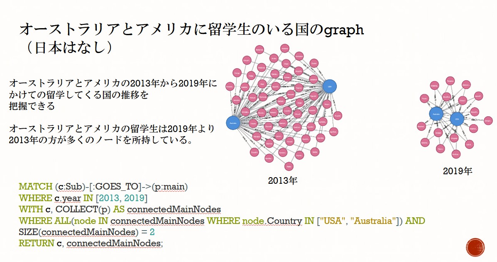
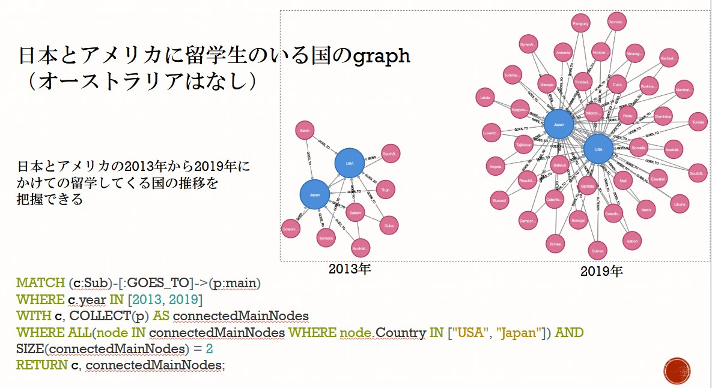
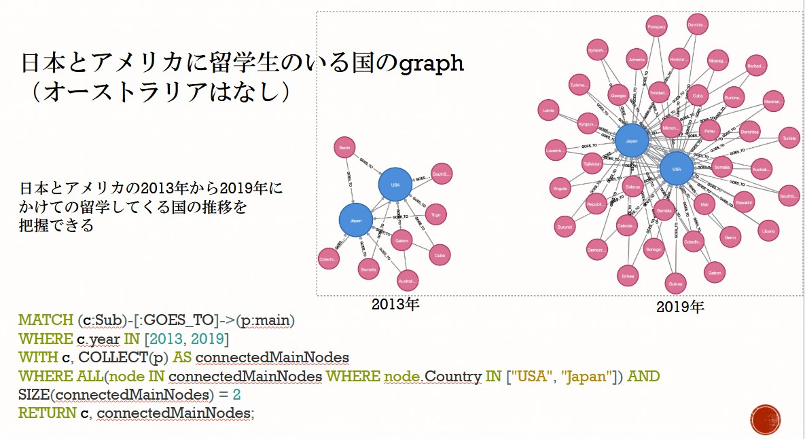
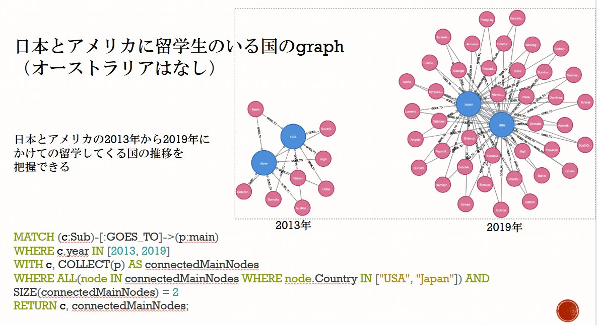

研究タイトル / Research Title
研究テーマ: 世界の学生移動データのグラフデータベースによる明瞭化
Research Topic: Clarifying Global Student Mobility Data through Graph Database
研究目的 / Research Objective
特定の国への各国の留学生数をNeo4jでグラフデータベース化することによって、留学生データの明瞭化を行い、新たな視点からデータの精査を行う。
This research visualizes international student numbers using Neo4j to clarify trends and allow data analysis from a new perspective.
使用データ / Dataset
https://stats.oecd.org/Index.aspx?DataSetCode=EDU_ENRL_MOBILE より、OECDが公開する留学生データを使用。
年度（2013年、2019年）、国（アメリカ・日本・オーストラリア）、学習レベル（大学）に基づき、Neo4j Desktopによりグラフデータベースを構築。
Data from the OECD website was used, covering international student mobility by country and year (2013, 2019). The data was structured into a graph database using Neo4j Desktop.
可視化 / Visualizations

 

